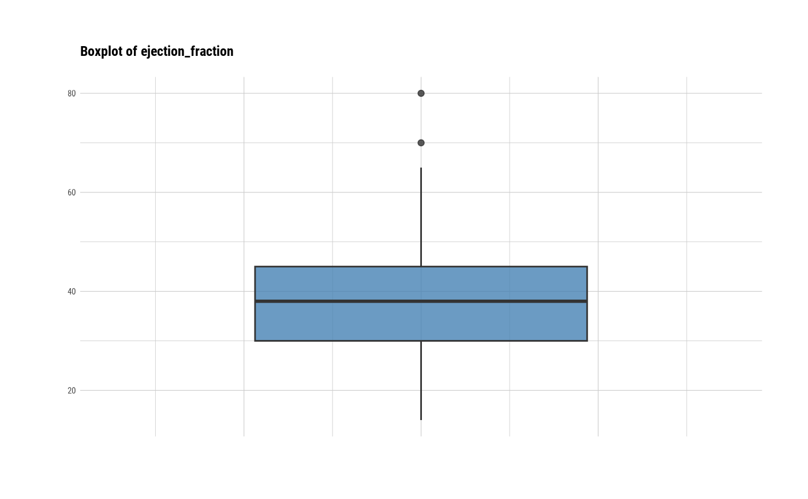

Visualize boxplots and histogram by attribute of univar_numeric class.
# S3 method for univar_numeric plot( x, indiv = FALSE, viz = c("hist", "boxplot"), stand = ifelse(rep(indiv, 4), c("none", "robust", "minmax", "zscore"), c("robust", "minmax", "zscore", "none")), prompt = FALSE, typographic = TRUE, ... )
Arguments
| x | an object of class "univar_numeric", usually, a result of a call to univar_numeric(). |
|---|---|
| indiv | logical. Select whether to display information of all variables in one plot when there are multiple selected numeric variables. In case of FALSE, all variable information is displayed in one plot. If TRUE, the information of the individual variables is output to the individual plots. The default is FALSE. If only one variable is selected, TRUE is applied. |
| viz | character. Describe what to plot visualization. "hist" draws a histogram and "boxplot" draws a boxplot. The default is "hist". |
| stand | character. Describe how to standardize the original data. "robust" normalizes the raw data through transformation calculated by IQR and median. "minmax" normalizes the original data using minmax transformation. "zscore" standardizes the original data using z-Score transformation. "none" does not perform data transformation. he default is "none" if indiv is TRUE, and "robust" if FALSE. |
| prompt | logical. The default value is FALSE. If there are multiple visualizations to be output, if this argument value is TRUE, a prompt is output each time. |
| typographic | logical. Whether to apply focuses on typographic elements to ggplot2 visualization. The default is TRUE. if TRUE provides a base theme that focuses on typographic elements using hrbrthemes package. |
| ... | arguments to be passed to methods, such as graphical parameters (see par). However, it does not support. |
See also
Examples
# Calculates the all categorical variables all_var <- univar_numeric(heartfailure) # Print univar_numeric class object all_var#> $statistics #> # A tibble: 7 x 10 #> variable n na mean sd se_mean IQR skewness kurtosis median #> <chr> <int> <int> <dbl> <dbl> <dbl> <dbl> <dbl> <dbl> <dbl> #> 1 age 299 0 6.08e1 1.19e1 6.88e-1 1.90e+1 0.424 -0.184 6.00e1 #> 2 cpk_enzyme 299 0 5.82e2 9.70e2 5.61e+1 4.66e+2 4.46 25.1 2.50e2 #> 3 ejection_… 299 0 3.81e1 1.18e1 6.84e-1 1.50e+1 0.555 0.0414 3.80e1 #> 4 platelets 279 20 2.63e5 9.85e4 5.90e+3 9.10e+4 1.49 6.45 2.62e5 #> 5 creatinine 299 0 1.39e0 1.03e0 5.98e-2 5.00e-1 4.46 25.8 1.10e0 #> 6 sodium 299 0 1.37e2 4.41e0 2.55e-1 6.00e+0 -1.05 4.12 1.37e2 #> 7 time 299 0 1.30e2 7.76e1 4.49e+0 1.30e+2 0.128 -1.21 1.15e2 #>#> $statistics #> # A tibble: 2 x 10 #> variable n na mean sd se_mean IQR skewness kurtosis median #> <chr> <int> <int> <dbl> <dbl> <dbl> <dbl> <dbl> <dbl> <dbl> #> 1 platelets 279 20 262861. 98474. 5895. 91000 1.49 6.45 262000 #> 2 sodium 299 0 137. 4.41 0.255 6 -1.05 4.12 137 #># Summary the all case : Return a invisible copy of an object. stat <- summary(all_var) # Summary by returned object stat#> # A tibble: 7 x 8 #> variable mean sd se_mean IQR skewness kurtosis median #> <chr> <dbl> <dbl> <dbl> <dbl> <dbl> <dbl> <dbl> #> 1 age 0.0437 0.626 0.0362 1 0.424 -0.184 0 #> 2 cpk_enzyme 0.713 2.08 0.121 1 4.46 25.1 0 #> 3 ejection_fraction 0.00557 0.789 0.0456 1 0.555 0.0414 0 #> 4 platelets 0.00947 1.08 0.0648 1 1.49 6.45 0 #> 5 creatinine 0.588 2.07 0.120 1 4.46 25.8 0 #> 6 sodium -0.0624 0.735 0.0425 1 -1.05 4.12 0 #> 7 time 0.117 0.597 0.0345 1 0.128 -1.21 0# one plot with all normalized variables by Min-Max method # plot(all_var, stand = "minmax") # one plot with all variables # plot(all_var, stand = "none") # one plot with all robust standardized variables plot(all_var, viz = "boxplot")# one plot with all standardized variables by Z-score method # plot(all_var, viz = "boxplot", stand = "zscore") # individual boxplot by variables # plot(all_var, indiv = TRUE, "boxplot") # individual histogram by variables plot(all_var, indiv = TRUE, "hist")# individual histogram by robust standardized variable # plot(all_var, indiv = TRUE, "hist", stand = "robust") # plot all variables by prompt # plot(all_var, indiv = TRUE, "hist", prompt = TRUE)